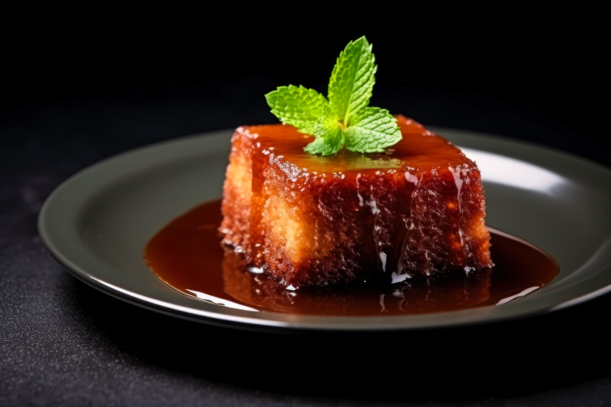

Malva Pudding

Malva pudding is a traditional South African dessert known for its sweet, spongy texture and rich caramel flavor. It's typically served warm with a generous drizzle of hot cream or custard.
Ingredients
- 1 cup sugar
- 1 cup flour
- 1 cup milk
- 1 tablespoon vinegar
- 1 tablespoon apricot jam
- 1 teaspoon baking soda
- 1/2 teaspoon salt
- 2 tablespoons butter (melted)
- 1 teaspoon vanilla extract
Instructions
- Preheat your oven to 350°F (175°C).
- In a mixing bowl, combine the sugar, flour, and salt.
- Add the milk, vinegar, apricot jam, melted butter, and vanilla extract. Mix until smooth.
- In a small bowl, dissolve the baking soda in a tablespoon of warm water and add it to the batter. Mix well.
- Pour the batter into a greased baking dish.
- Bake for 30-35 minutes or until a toothpick inserted into the center comes out clean.
- While the pudding is baking, prepare the sauce by heating 1 cup of cream with 1/2 cup of sugar until the sugar dissolves.
- Once the pudding is done, remove it from the oven and immediately pour the hot sauce over it.
- Let it soak for a few minutes before serving warm with extra cream or custard if desired.
Home